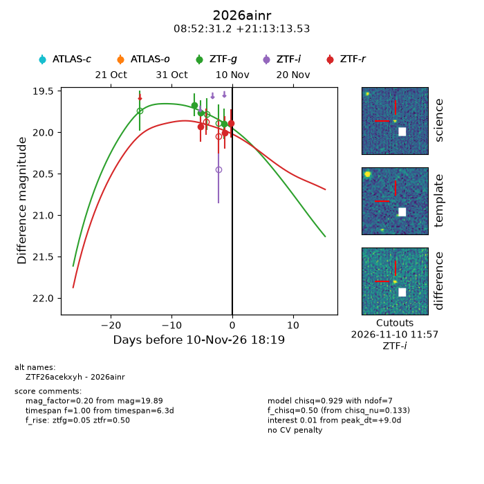
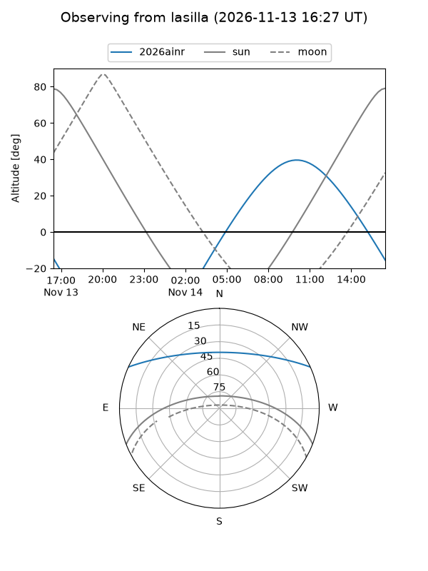
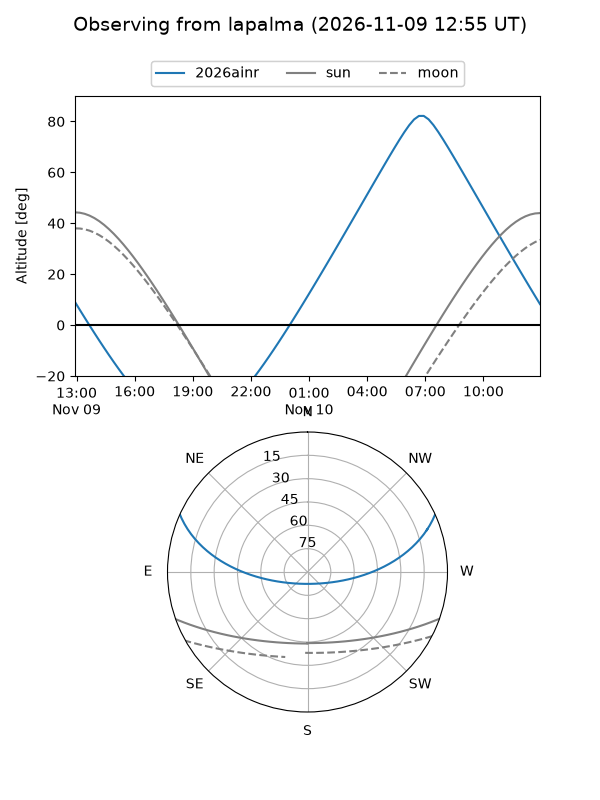
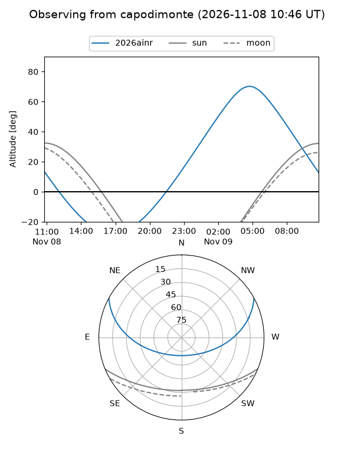
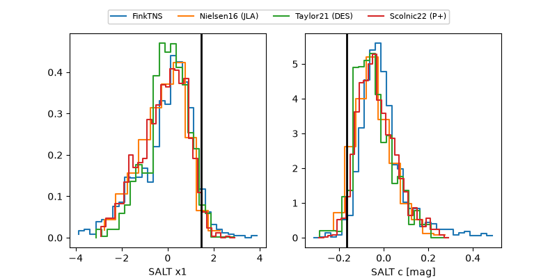

2026ainr
Target 2026ainr at 2026-11-10 18:22
Aliases and brokers:
FINK-ZTF: ztf.fink-portal.org/ZTF26acekxyh
Lasair-ZTF: lasair-ztf.lsst.ac.uk/objects/ZTF26acekxyh
ALeRCE-ZTF: alerce.online/object/ZTF26acekxyh
YSE-PZ: ziggy.ucolick.org/yse/transient_detail/2026ainr
TNS name: wis-tns.org/object/2026ainr
Direct TNS query: direct search
alt names
ZTF26acekxyh (ztf,fink_ztf)
2026ainr (tns,yse)
Coordinates:
equatorial (ra, dec) = 133.1298,+21.22043
equatorial (HMS+DMS) = 08:52:31.15,+21:13:13.53
galactic (l, b) = (205.3007,+35.67966)
Flags:
peak dt: +9.0
Photometry:
last ztfg=19.89, ztfr=19.89
3 ztfg, 3 ztfr detections
Lightcurve

Visibility



Additional plots
